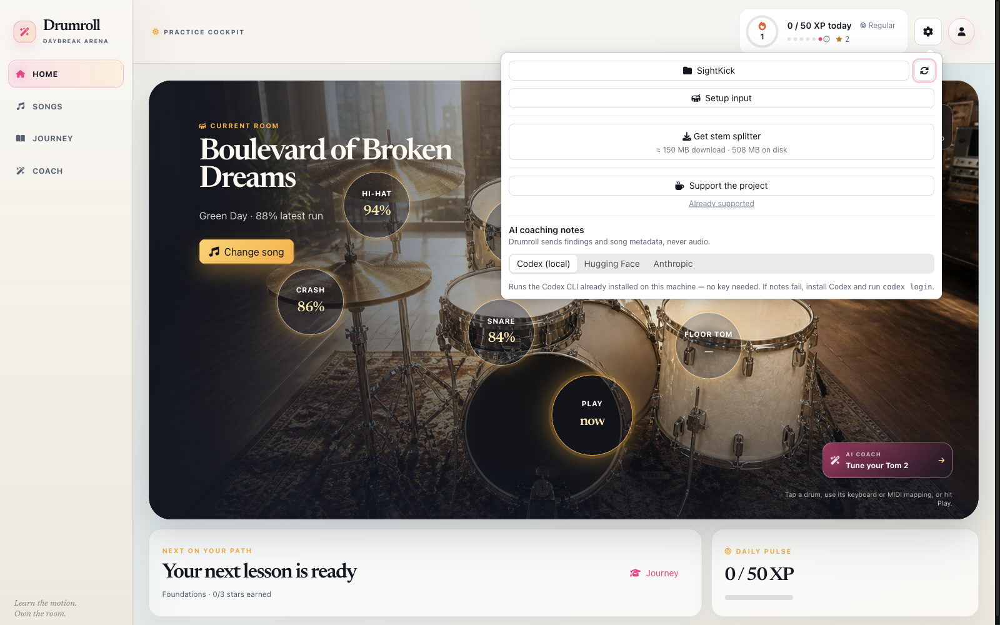
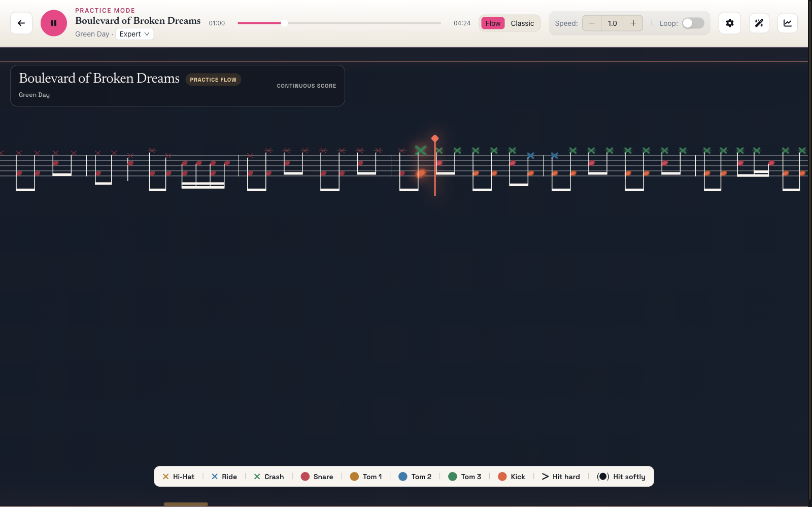
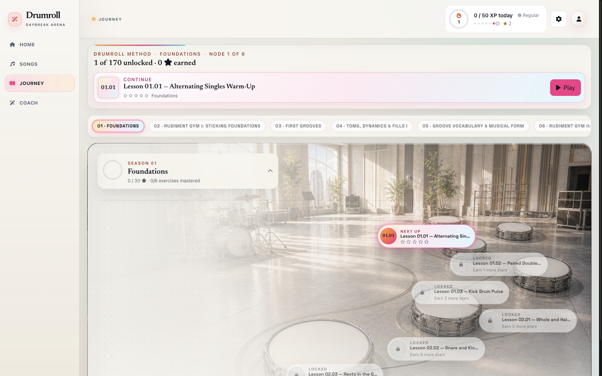
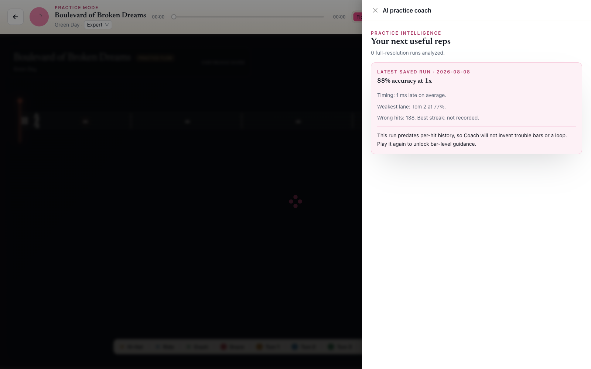

Choose a reachable challenge.
The next-practice selector balances prerequisites, recent mastery, kit-lane weakness, speed, spacing, and variety.
Practice that listens back.
Drumroll is a hands-free drum-learning game for an electronic kit. It holds the session together while your playing shows what comes next.
Public preview: Drumroll 1.2.0-kb.10 for Apple Silicon macOS, Developer ID signed and Apple notarized.

The promise
Start with a clear goal. Let Flow notation keep the next notes in view. In Practice, Drumroll can return to a safe checkpoint after a material pattern of misses; in Perform, it records one uninterrupted pass.
The practice loop
Flow keeps the playhead fixed while the chart moves. Practice controls let you choose speed, notation, loops, checkpoint recovery, and lives without losing the musical thread.

The next-practice selector balances prerequisites, recent mastery, kit-lane weakness, speed, spacing, and variety.
When a material trouble window is resolved, Practice can recover to the latest safe musical checkpoint and lower the pace.
A successful recovery releases the player back into the original path in bounded speed steps.
The method
Fundamentals, rudiments, coordination, grooves, fills, and musical applications are arranged as a Journey. Each lesson carries its real title, prerequisite state, skill focus, tempo, and mastery rule.
Take the next lesson on desktop

The evidence
Drumroll turns saved hit records, resolved misses, wrong-pad hits, timing offsets, speed, streaks, and recovery attempts into a next useful rep. If bar-level history is absent, Coach says so rather than inventing a weak bar.
Session mode and configuration, score and streak, lane summaries, timing, wrong-pad hits, resolved misses, recovery summaries, checkpoints, and life events. Full hit records enable exact trouble bars and targeted loops for new runs.
Built for the kit
Ready cue starts an eligible session with one deliberate kick after the quiet readiness window.
Practice protects learning quality with checkpoint recovery and repeatable focused loops.
Perform protects continuity with one canonical, uninterrupted pass.
Keyboard and pointer controls remain available for setup and accessibility. Local files, native MIDI, and the full practice setup are desktop-first.
The desktop release
Drumroll 1.2.0-kb.10 is the Apple Silicon macOS preview. The public artifact is Developer ID signed, Apple notarized, and published with a reproducible SHA-256 checksum.
Notarized DMG · verify SHA-256
Clear boundaries
Drumroll is designed around MIDI input from an electronic kit. Keyboard and pointer controls remain available for setup and accessibility.
No. Exact trouble bars and targeted loops require a saved run with full hit records. Summary-only runs can still report their recorded accuracy, timing, lane, wrong-hit, speed, and date.
Yes. The shared learning surface is available at drumroll.pages.dev. Native MIDI, local files, and the complete kit-first setup remain desktop capabilities.